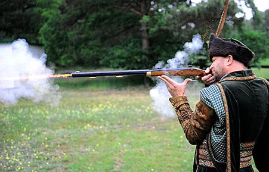
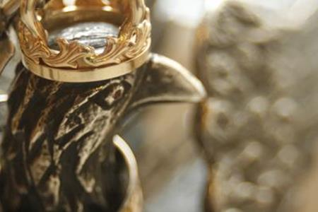
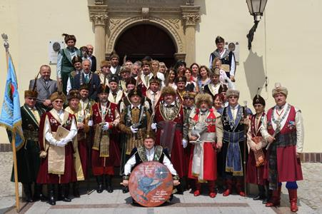
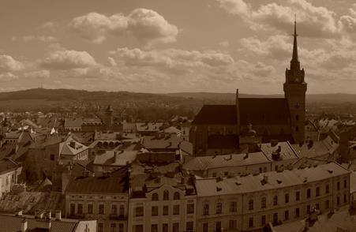

W dniu 18 marca 1996 roku kustosz tarnowskiego Muzeum Alicja Majcher-Węgrzynek i dziennikarz Ryszard Lis zaprosili do ratusza przedstawicieli rzemiosła, przedsiębiorców, lekarzy, grupę tarnowian, którym bliskie były idee Bractwa. Wynikiem spotkania było podjęcie uchwały o reaktywowaniu Bractwa Kurkowego w Tarnowie.
Towarzystwo Strzeleckie, spadkobierca tradycji prastarego Bractwa Kurkowego, jest najstarszym towarzystwem tarnowskim istniejącym do dziś, a w ciągu wieków funkcjonowało z przerwami liczącymi dziesiątki lat. Geneza Towarzystwa Kurkowego wywodzi się ze średniowiecznej struktury miasta, które w myśl prawa magdeburskiego było zobowiązane do zorganizowania własnej obrony. Powstawanie licznych bractw i stowarzyszeń na przełomie XIII i XIV wieku było charakterystyczne dla wielu miast, zarówno polskich, jak i europejskich.(...) Najwcześniej Bractwa Kurkowe powstawały w miastach niemieckich. W Polsce pierwsze ślady tych stowarzyszeń spotykamy w miastach śląskich. Najstarsze Bractwo Kurkowe zawiązało się w Świdnicy i już w 1286 roku zostało obdarzone przywilejami przez księcia Bolesława I - przypomina Alicja Majcher-Węgrzynek. Badając dzieje Bractwa ustaliła, że pierwsza zachowana wzmianka, odnosząca się do tego stowarzyszenia, pochodzi z 1555 r. W inwentarzach miejskich zanotowano posiadanie srebrnego kura, będącego godłem bractw strzeleckich. Zaznacza jednak, że Bractwo musiało powstać wcześniej. Tarnów posiadał mury miejskie i stowarzyszenie cechowe, podobnie jak inne miasta było zobowiązane do organizowania obrony. Niewiele można powiedzieć o początkach stowarzyszenia, ponieważ nie zachowała się dokumentacja historyczna dotycząca jego organizacji i działalności. Jedynie posiadanie kura, będącego symbolem Bractw Kurkowych, wskazuje na jego istnienie i działalność w Tarnowie. Gdy Tarnów znalazł się pod zaborem austriackim, w 1809 roku rząd usiłował przetopić kura, razem z innymi srebrami, w mennicy na talary austriackie. Nie dopuścili do tego wówczas mieszkańcy, którzy złożyli równowartość 25 florenów w kasie rządowej i uratowali symbol Bractwa. Wygląd kura przedstawił plastycznie Walery Eljasz: W starej, mocno okutej skrzyni z pieniądzmi mieści się razem srebrny kurek towarzystwa strzeleckiego tarnowskiego. Jest to kogut, a nie orzeł (jak krakowskiego towarzystwa), srebrny, mały z dziobem i głową zwróconą w lewo. Na szyi ma koronę wieńcem na dół wdzianą, na głowie zaś zwyczajnie koronę włożoną. Z pośród skrzydeł z grzbietu wychodzi łańcuch złożony z ogniw okrągławych, co czwarte czworoboczne na każdym napis z nazwiskiem króla kurkowego i z rokiem jego panowania. Wznowienie Bractwa Kurkowego nastąpiło w okresie zaboru austriackiego, jego działalność reaktywowano na podstawie dekretu Gubernium Galicyjskiego w 1845 r. Zachowany do dnia dzisiejszego statut Towarzystwa Strzeleckiego w Tarnowie określa cel tego stowarzyszenia. "Celem towarzystwa jest wyłącznie przyzwoita i w karby porządku ujęta rozrywka strzelaniem do tarczy". Pod pretekstem niewinnie brzmiącej formuły niewątpliwie istniał głębszy sens-twierdzi Alicja Majcher-Węgrzynek. - Cel Towarzystwa został określony oględnie, w sposób nie budzący obaw o zagrożenie ówczesnego porządku prawnego. W istocie przyczyną odnowionego Towarzystwa Strzeleckiego była myśl przysposobienia się do ewentualnej walki o niepodległość.Towarzystwo skupiało obywateli różnych stanów. Zachowały się zdjęcia braci kurkowych z okresu międzywojennego z królem kurkowym, niejakim Rusinowskim. Króla wyłaniano spośród strzelców. Strzelanie odbywało się w sezonie letnim, przeważnie od maja do października. Poprzedzało je zawsze uroczyste otwarcie strzelnicy, które następowało w Zielone Świątki. Miało ono niezwykle atrakcyjny charakter. Najwięcej emocji dostarczało strzelanie królewskie. Zdobywca największej ilości punktów otrzymywał tutuł króla kurkowego. Piastowanie tej godności - zaznacza Alicja Majcher-Węgrzynek - było rzeczą niezwykle zaszczytną, dodawało bowiem splendoru zwycięzcy. Zwycięzki król zapraszał brać kurkową na bankiet (sam pokrywał koszty), funkcja nie przynosiła mu korzyści materialnych. Sięgając do współczesnej karty Bractwa, warto dodać, że prezesem reaktywowanego Bractwa Kurkowego został dr Józef Sławomir Bossowski, na zastępców wybrano: mgr Sławomira Kolasińskiego i mgr inż. Piotra Ostafila. Nawiązując do tradycji, bracia kurkowi zorganizowali jesienią 1998 r. I strzelanie królewskie, królem kurkowym w reaktywowanym stowarzyszeniu został Józef S. Bossowski. Król otrzymał w roczne posiadanie srebrnego kura, odtworzonego przez artystkę Ewę Fleszar. Zgodnie z tradycją abdykujący król kurkowy ufundował prezent w postaci srebrnego łańcucha, dla Towarzystwa Strzeleckiego. Bractwo skupia wyłącznie panów, doceniając rolę Alicji Majcher-Węgrzynek, udział w reaktywowaniu stowarzyszenia, bracia uhonorowali ją brązowym Krzyżem Zasługi Bractwa Kurkowego w Tarnowie. Pani Alicja dodaje, że pojawienie się na uroczystościach grupy wyróżniającej się strojami- kontusze, żupany - podtrzymującej tradycję, napawa ją dumą.